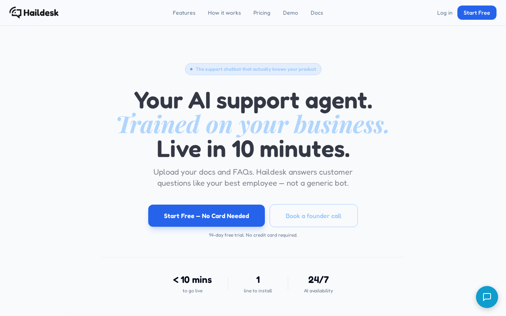
Think aloud: This is exactly the kind of thing I've been looking for — an AI trained on my clients' own FAQs, with a knowledge base and conversation history. Multi-org support too. Let me log into my account and get a workspace set up for Bluefin Dental.
URL/context: https://haildesk.com/
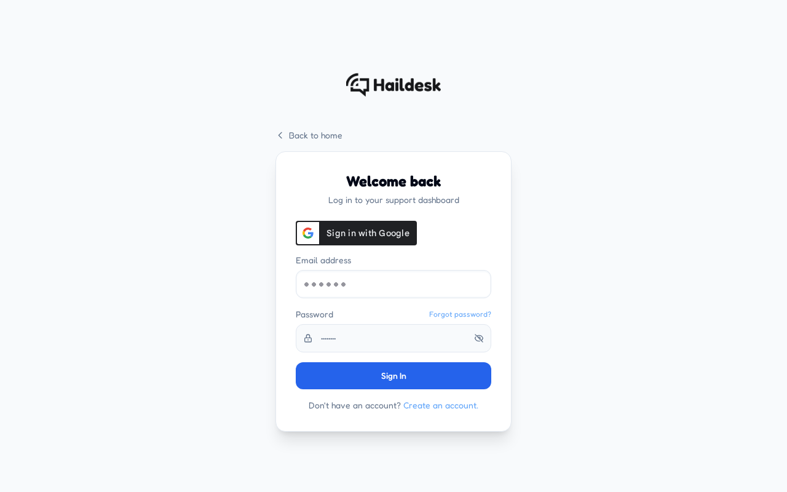
Think aloud: Login page, clean and simple. Email and password fields right there — I'll sign in and get straight to setting up a workspace for Bluefin Dental.
URL/context: https://haildesk.com/login
Think aloud: I can keep moving through the visible product flow: Fill in my password after the email.
URL/context: https://haildesk.com/login
Think aloud: I can keep moving through the visible product flow: Click Sign In to submit the login form.
URL/context: https://haildesk.com/login
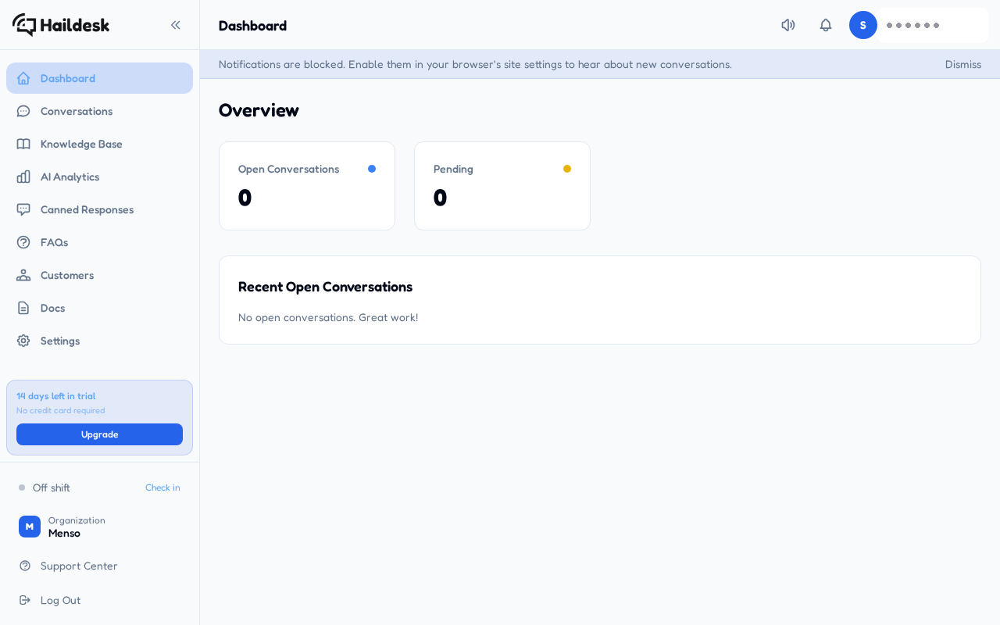
Think aloud: I'm in — clean dashboard, trial with 14 days left, no credit card. There's a Knowledge Base and an Organization called Menso in the sidebar. First let me clear this notification banner so I can see properly.
URL/context: https://haildesk.com/dashboard

Think aloud: I'm in the Haildesk dashboard under an org called Menso. Before I add any client FAQs, I need to figure out how workspaces are separated per client — that Organization switcher at the bottom looks like the place to start.
URL/context: https://haildesk.com/dashboard

Think aloud: I clicked the organization switcher but I'm not seeing an obvious menu with a create option — for a multi-client setup this is the first thing I need. Let me open it again and look properly.
URL/context: https://haildesk.com/dashboard
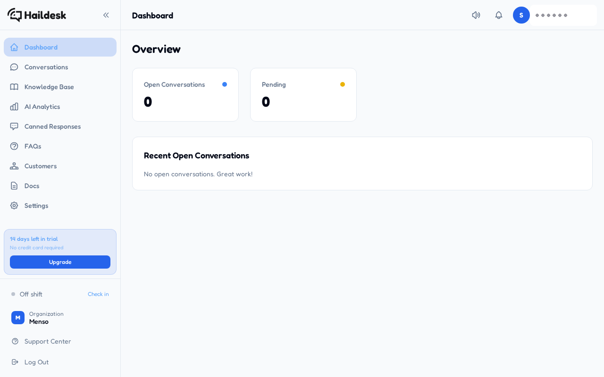
Think aloud: The organization menu still isn't giving me a visible 'create workspace' option, so instead of fighting it I'll go straight to Knowledge Base — that's where my client content needs to live anyway, and it'll show me how separation actually works here.
URL/context: https://haildesk.com/dashboard
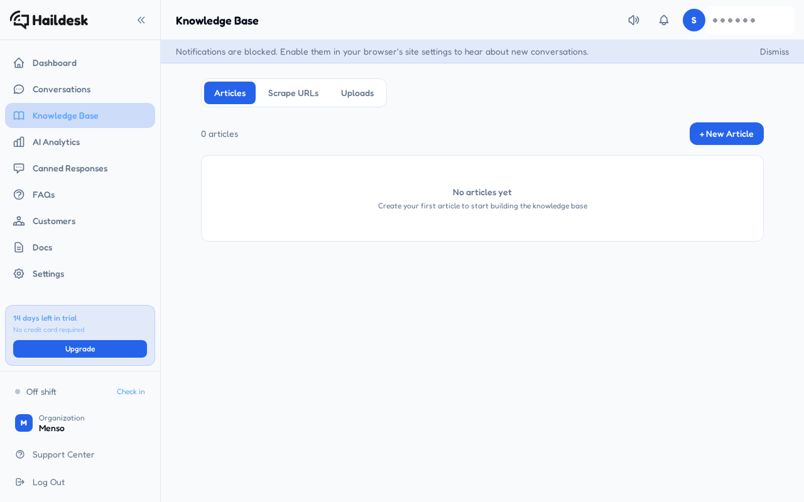
Think aloud: Knowledge Base is a clean slate — zero articles. Let me clear this notification banner, then go straight into creating my first article with the Bluefin Dental FAQ content.
URL/context: https://haildesk.com/knowledge
Think aloud: I can keep moving through the visible product flow: Open the New Article form to add the Bluefin Dental Clinic FAQ content as text.
URL/context: https://haildesk.com/knowledge
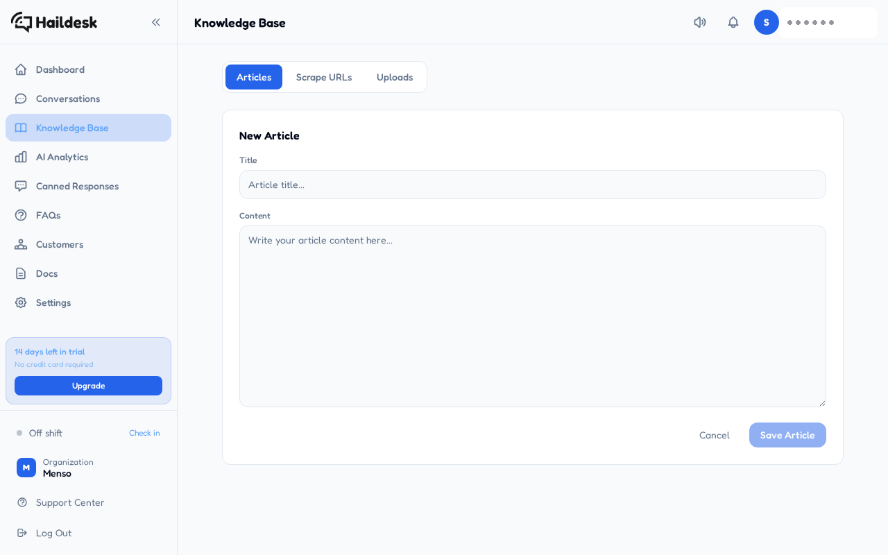
Think aloud: The New Article form is simple — title and a big content box. I'll title this for my Bluefin Dental client and paste their full FAQ in as the content.
URL/context: https://haildesk.com/knowledge
Think aloud: I can keep moving through the visible product flow: Paste the full Bluefin Dental Clinic FAQ as article content so the AI can train on it.
URL/context: https://haildesk.com/knowledge
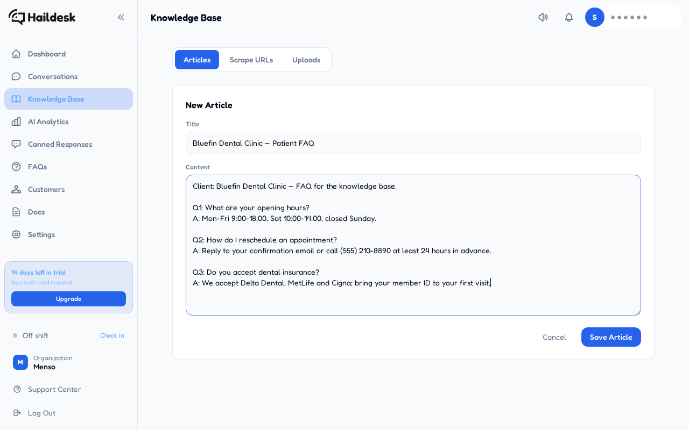
Think aloud: Title and the full Bluefin FAQ are in, and Save Article just lit up — saving this so I can get to the part I actually care about: does the AI answer in my client's voice?
URL/context: https://haildesk.com/knowledge
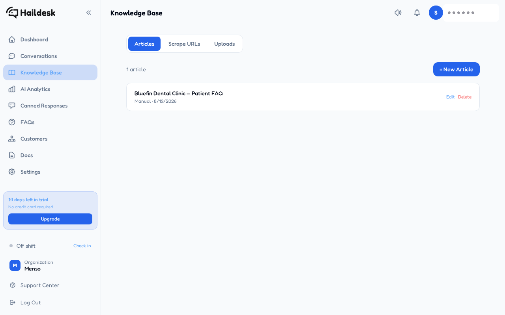
Think aloud: The Bluefin FAQ saved — one article in the knowledge base, clean. Now the real test: starting a conversation to see if the AI actually answers in my client's voice using this material.
URL/context: https://haildesk.com/knowledge
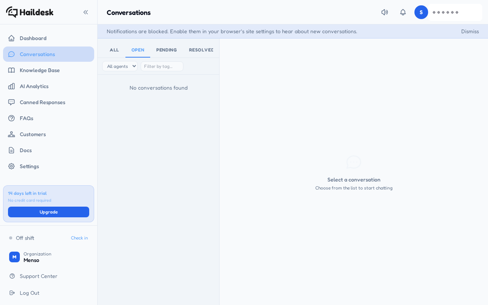
Think aloud: Conversations is empty — makes sense, no customer has written in yet, and I don't see a way to start one from here. If I can't preview how the AI answers before going live, that's a dealbreaker for me. Dashboard usually has a 'test your assistant' entry point, so I'm heading there.
URL/context: https://haildesk.com/conversations
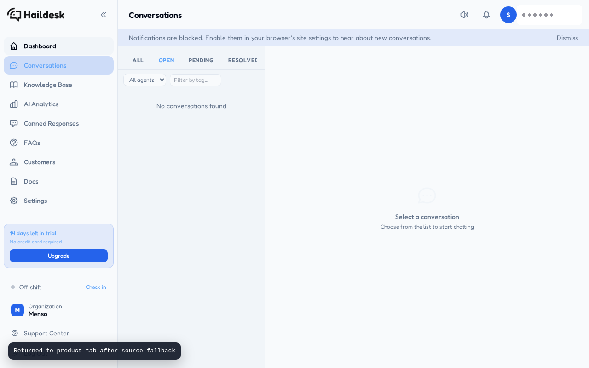
Think aloud: Back on the Conversations inbox and it's still empty — no way to spin up a test thread from here. The Dashboard is my next best bet for an AI preview or chat widget I can poke at.
URL/context: https://haildesk.com/conversations
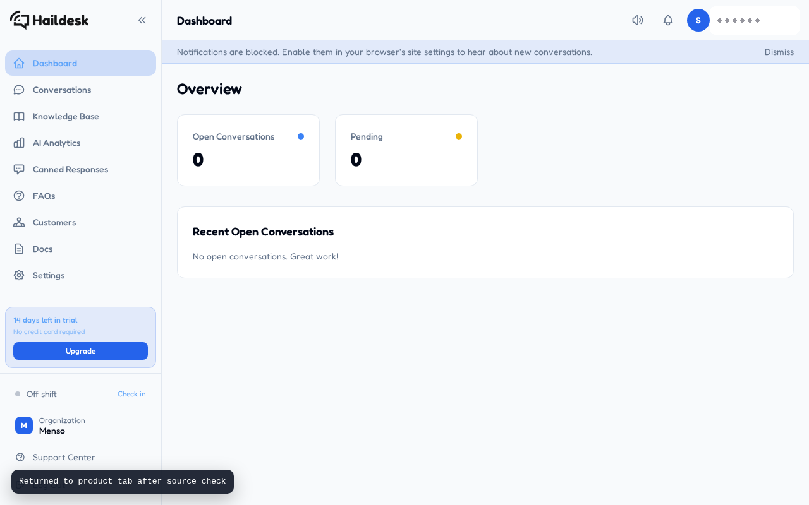
Think aloud: Dashboard's empty since nobody's written in yet. Settings is where I'd expect the AI agent setup and a way to preview how it answers — if I can't see the AI reply to my Bluefin FAQ before a real client does, I'm not committing to this.
URL/context: https://haildesk.com/dashboard
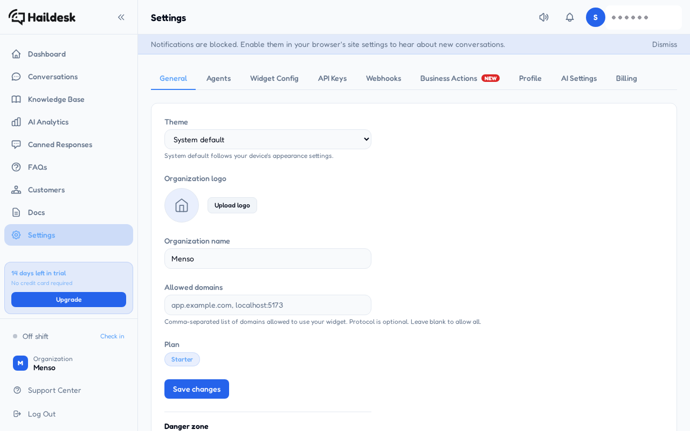
Think aloud: Settings has an 'AI Settings' tab — that's exactly where the AI agent config should live, and hopefully a way to preview how it answers using my Bluefin FAQ. This is the piece I've been hunting for.
URL/context: https://haildesk.com/settings
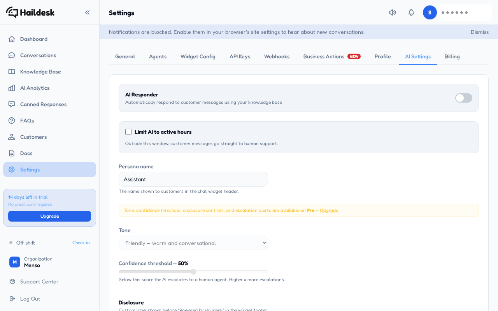
Think aloud: This is the AI Responder — off by default. Tone is locked to Pro, annoying, but the Friendly default works for a dental clinic anyway. Let me switch the responder on, then find where to actually test a conversation.
URL/context: https://haildesk.com/settings
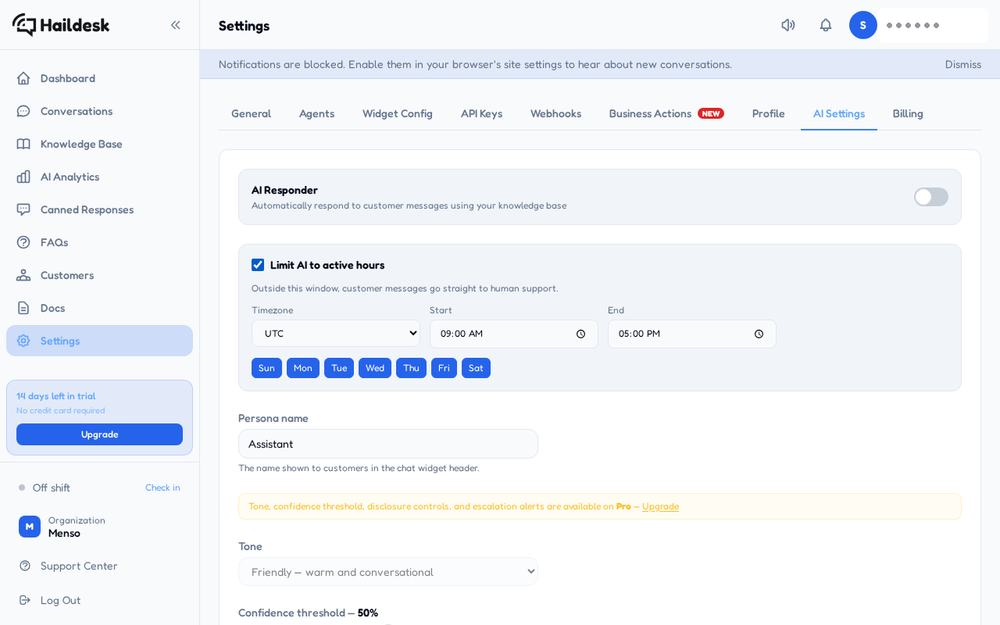
Think aloud: The responder's on and it's flagging unsaved changes — I'm saving so the AI actually starts answering from my Bluefin FAQ. I still haven't seen a live AI reply, which is the one proof I really wanted before trusting this.
URL/context: https://haildesk.com/settings